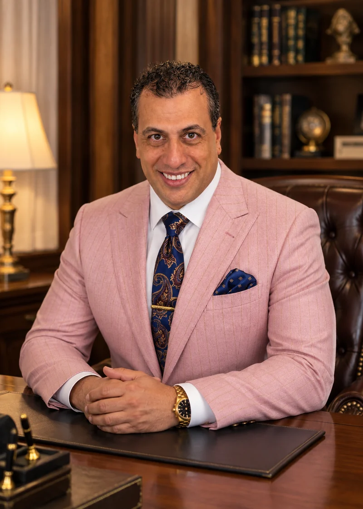

عمرو سعيد قطبAmr Saied Kotb
محامٍ بالنقض — المؤسس والشريك الإداري لمكتب ASK للمحاماة والاستشارات القانونيةCassation Lawyer — Founder & Managing Partner, ASK Legal Advisors & Law Firm
عمرو سعيد قطب محامٍ بالنقض ومؤسس مكتب ASK للمحاماة والاستشارات القانونية، بخبرة تتجاوز 25 عاماً في الممارسة أمام جميع درجات المحاكم المصرية وفي التحكيم الدولي. متخصص في العقود، ومنها عقود الامتياز التجاري (الفرانشايز)، صياغةً ومراجعةً عبر عدة ولايات قضائية في ضوء القانون الدولي، وهو مؤلف «قائمة مراجعة العقود» (Contract Review Checklist)، الدليل العملي للمراجعة القانونية والموضوعية والفنية للعقود المنشور على askuniversal.com. ويقدّم المشورة كذلك في قانون الشركات والاستثمار والملكية الفكرية والتكنولوجيا، بما في ذلك الأمن السيبراني والتقاضي الإلكتروني.Amr Saied Kotb is a Cassation Lawyer and the founder of ASK Legal Advisors & Law Firm, with more than 25 years of practice before Egyptian courts at every level and in international arbitration. He specialises in contracts, including franchise agreements, drafted and reviewed across several jurisdictions with attention to international law, and is the author of Contract Review Checklist, a practical guide to the legal, substantive and technical review of contracts, published on askuniversal.com. He also advises on corporate, investment, and intellectual property and technology law, including cybersecurity and electronic litigation.
حاصل على ماجستير في القانون من Hochschule Darmstadt, Germany، واجتاز امتحان الدولة الثاني في القانون في ألمانيا (نورنبرغ، 2025)، وهو محكّم ووسيط دولي معتمد، ومشارك أساسي في الميثاق العالمي للأمم المتحدة. يخدم الشركات متعددة الجنسيات والشركات الناشئة والعملاء الأفراد بسبع لغات عمل.He holds a Master's in Law from Hochschule Darmstadt (Germany), passed Germany's Second State Examination in Law (Nuremberg, 2025), and is a certified international arbitrator and mediator. He is a core participant in the United Nations Global Compact and serves multinational corporations, emerging businesses and private clients in seven working languages.
الخبرة المهنيةProfessional Experience
مكتب ASK للمحاماة والاستشارات القانونية — القاهرةASK Legal Advisors & Law Firm — Cairo
قيادة المكتبFirm leadership
يقود مكتباً متكامل الخدمات يقدّم أكثر من 55 خدمة قانونية بسبع لغات عمل، ومتخصصاً في قانون الشركات والاستثمار والعلامات التجارية.Leads a full-service firm offering 55+ legal services in seven working languages, specialising in corporate and investment law and trademarks.
العقود والامتياز التجاري (الفرانشايز)Contracts & franchising
متخصص في عقود الامتياز التجاري (الفرانشايز)، ومنها عقود Tesla Appliances (صربيا). مؤلف «قائمة مراجعة العقود» (Contract Review Checklist) وكتيّب لإعداد المحامين الجدد. ومن العلامات التجارية التي تولّى أعمالها: Luckin Coffee وFELIX Seit 1790 وGoTech وTaurus وBaByliss وBlackline.Specialises in franchise agreements, including contracts for Tesla Appliances (Serbia). Author of Contract Review Checklist and a handbook for new lawyers. Trademarks he has acted for include Luckin Coffee, FELIX Seit 1790, GoTech, Taurus, BaByliss and Blackline.
التمثيل أمام المحاكمCourt representation
تمثيل العملاء أمام جميع درجات المحاكم المصرية، ومنها محكمة النقض والمحكمة الإدارية العليا والمحكمة الدستورية العليا والمحاكم الاقتصادية والجنائية، حضورياً وعبر التقاضي الإلكتروني وعن بُعد.Represents clients before every level of the Egyptian courts, including Cassation, the Supreme Administrative and Supreme Constitutional Courts, and the Economic and Criminal Courts, in person and through electronic and remote litigation.
التحكيم الدوليInternational arbitration
التحكيم وتسوية المنازعات وفق قواعد ICC وLCIA وSIAC وAAA/ICDR وICSID وUNCITRAL وPCA، والتسوية بالوساطة والتفاوض متى كان ذلك أنفع للعميل.Acts in arbitration and dispute resolution under ICC, LCIA, SIAC, AAA/ICDR, ICSID, UNCITRAL and PCA rules, and resolves matters through mediation and negotiation where that serves the client better.
الشركات والاستثمارCorporate & investment
تقديم المشورة للشركات متعددة الجنسيات والشركات الناشئة والعملاء الأفراد في تأسيس الشركات والاندماج والاستحواذ وحوكمة الشركات وحماية الاستثمار الأجنبي.Advises multinational corporations, emerging businesses and private clients on company formation, mergers and acquisitions, corporate governance and foreign investment protection.
الملكية الفكرية والتكنولوجياIP & technology
تسجيل العلامات التجارية محلياً ودولياً عبر نظام مدريد (Madrid System)، والاستشارات في براءات الاختراع وحق المؤلف والأمن السيبراني وحماية البيانات وعقود التكنولوجيا وشروط المنصات، ومنازعات الملكية الفكرية العابرة للحدود.Registers trademarks nationally and internationally through the Madrid System. Advises on patents, copyright, cybersecurity and data protection, technology contracts and platform terms, and handles cross-border IP litigation.
الخدمات الرقميةDigital delivery
أطلق عام 2026 بوابة رقمية آمنة للعملاء لمتابعة القضايا لحظياً وتبادل المستندات والتواصل المباشر مع الفريق القانوني.Launched a secure digital client portal in 2026 for real-time case tracking, document exchange and direct communication with the legal team.
مجالات الخبرةAreas of Expertise
العقود والامتياز التجاريContracts & franchising
- صياغة العقود ومراجعتها وتقييم مخاطرها عبر عدة ولايات قضائيةContract drafting, review and risk assessment across several jurisdictions
- عقود الامتياز التجاري (الفرانشايز)Franchise agreements
- مراجعة كل عقد وفق قانون كل دولة معنية والقانون الدوليReview against the law of every country involved and international law
- صياغة شروط التحكيم ومراجعتهاArbitration clause drafting and review
الملكية الفكرية والتكنولوجياIP & technology
- تسجيل العلامات التجارية محلياً وعبر نظام مدريدTrademark registration nationally and via the Madrid System
- براءات الاختراع وحق المؤلف والترخيصPatents, copyright and licensing
- منازعات الملكية الفكرية العابرة للحدودCross-border IP litigation
- الأمن السيبراني وحماية البيانات وعقود التكنولوجياCybersecurity, data protection and technology contracts
التقاضي والتمثيل أمام المحاكمLitigation & court representation
- المنازعات التجارية: العقود والوكالة والتوزيع ونزاعات المساهمينCommercial disputes: contracts, agency, distribution, shareholders
- التقاضي المدني: المسؤولية والتعويض وتنفيذ العقودCivil litigation: liability, compensation, contract enforcement
- التقاضي الإلكتروني وعن بُعدElectronic and remote litigation
- الدفاع الجنائي بجميع الدرجات حتى النقضCriminal defence at all levels up to cassation
التحكيم وتسوية المنازعاتArbitration & dispute resolution
- التحكيم التجاري الدولي: ICC وLCIA وSIAC وAAA/ICDRInternational commercial arbitration: ICC, LCIA, SIAC, AAA/ICDR
- منازعات المستثمر والدولة: ICSID وUNCITRAL وPCAInvestor-state proceedings: ICSID, UNCITRAL, PCA
- التحكيم المحلي أمام المراكز المصرية والإقليميةDomestic arbitration before Egyptian and regional centres
- الوساطة والتفاوض والتسويات متعددة الأطرافMediation, negotiation and multi-party settlement
الشركات والاستثمارCorporate & investment law
- تأسيس الشركات وهيكلتها القانونيةCompany formation and legal structuring
- الاندماج والاستحواذ والفحص النافي للجهالةMergers and acquisitions, due diligence
- حوكمة الشركات وسياسات مجالس الإدارة والإفصاحCorporate governance, board policy and disclosure
- حماية الاستثمار الأجنبي واتفاقيات الاستثمار الثنائيةForeign investment protection and BIT analysis
الامتثال والتنظيمRegulatory & compliance
- برامج مكافحة غسل الأموال وتمويل الإرهاب ومعايير FATFAML/CFT programme design and FATF compliance
- فحص العقوبات: OFAC والاتحاد الأوروبي والأمم المتحدةOFAC, EU and UN sanctions screening
- الدفاع أمام الجهات الرقابية والتحقيقاتRegulatory defence and investigations
- التنظيم المصرفي والتراخيص وهيكلة التكنولوجيا الماليةBanking regulation, licensing and FinTech structuring
المؤهلاتQualifications
محامٍ بالنقضCassation Lawyer
نقابة المحامين المصرية. مقبول للمرافعة أمام محكمة النقض والمحكمة الإدارية العليا والمحكمة الدستورية العليا.Egyptian Bar Association. Admitted before the Court of Cassation, the Supreme Administrative Court and the Supreme Constitutional Court.
امتحان الدولة الثاني في القانونSecond State Examination in Law
Zweite Juristische Staatsprüfung — نورنبرغ، ألمانيا، 2025.Zweite Juristische Staatsprüfung — Nuremberg, Germany, 2025.
ماجستير في القانونMaster's Degree in Law
Hochschule Darmstadt (h_da), GermanyHochschule Darmstadt (h_da), Germany.
ليسانس الحقوقBachelor of Laws
كلية الحقوق، جامعة القاهرة، 2001.Faculty of Law, Cairo University, 2001.
محكّم ووسيط دولي معتمدCertified International Arbitrator & Mediator
معتمد للعمل محكّماً دولياً ووسيطاً دولياً.Accredited to act as an international arbitrator and an international mediator.
ISO 9001:2015ISO 9001:2015
شهادة في أنظمة إدارة الجودة.Certified in Quality Management Systems.
العضوياتMemberships
التدريس والمؤلفات والتقديرTeaching, Publications & Recognition
التدريس والمؤلفاتTeaching & publications
- يدرّس القانون الدستوري والقانون المدني والعقود لطلاب برامج الحقوق باللغة الإنجليزية، ويُعدّ لهم المذكرات الدراسية.Teaches Constitutional Law, Civil Law and Contracts to students of English-language law programmes and prepares their study memoranda.
- تدريب المحامين.Training of lawyers.
- مؤلف «قائمة مراجعة العقود» (Contract Review Checklist)، المنشور على askuniversal.com.Author of Contract Review Checklist, published on askuniversal.com.
- مؤلف كتيّب لإعداد المحامين الجدد.Author of a handbook for new lawyers.
التدريبTraining
- دورات في الأمن السيبرانيCybersecurity courses
- دورات في التقاضي الإلكترونيElectronic litigation (e-litigation) courses
- دورات في الجودة وحماية البياناتQuality and data protection courses
التقديرRecognition
- نُشر عنه في مجلات أعمال إلكترونية، منها Business Leader وGlobal Vision.Featured in online business magazines, including Business Leader and Global Vision.
- صفحة المشاركة الرسمية في الميثاق العالمي للأمم المتحدةOfficial UN Global Compact participant profile